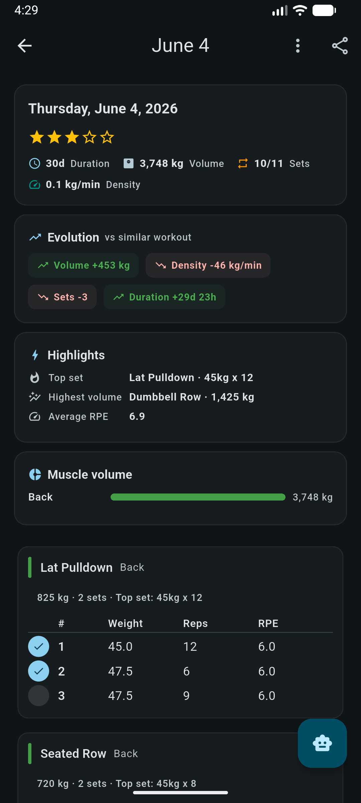

Starting a session
There are three ways into the live workout screen.
- Empty session
- New Workout · Start now on the dashboard. The workout row is created straight away, but its start time stays empty until you press start or complete a set, so an accidental tap does not leave a five-hour session in your history.
- From a routine day
- Every exercise of that day is copied in with its predefined sets: weight, reps, distance, time and warm-up flags included. You start with the session already laid out.
- Resume
- An unfinished session reopens exactly where you left it, including a running or paused timer.
The session stopwatch
The header clock ticks every second and is mirrored into an ongoing
notification, so you can leave the app and still see the elapsed time.
It is formatted MM:SS up to an hour, then
1h 04min.
- Pause is honest. Pausing is stored, and resuming shifts the start time forward by however long you were paused. Paused minutes never inflate the session duration.
- Closing the app while paused is safe. Reopening performs the same shift, so the clock picks up where it stopped.
- Reset asks first, then clears the start, end and pause markers.
- With auto-start workout timer enabled in settings, the clock starts when you complete your first set and stops when every set in the session is complete.
The rest timer
Marking a set complete starts the rest countdown for that exercise, using the exercise's own rest time, the routine's override, or the global default (90 s) in that order. If the set you just ticked was the last incomplete set in the session, a running rest timer is stopped instead of restarted.
The countdown is anchored to a wall-clock end time and re-synced on every tick rather than decremented. Android throttling timers in the background, or the screen going off, cannot make it lose seconds.
The dedicated timer screen shows a 280 px progress ring with the countdown in large type and a state label: Resting, Paused, Complete or Ready. The ring turns amber in the final five seconds and green on completion.
- Presets for 30 s, 60 s, 90 s, 2 min and 3 min appear only while the timer is idle.
- One control pauses and resumes; a stop action lives in the app bar while the timer is active.
- Completion is hard to miss: a notification plus a burst of haptic feedback that repeats for about three seconds.
Editing a set
Tapping a set row opens the editor sheet. The numeric controls adapt to the exercise type, and use that exercise's own weight increment for the plus and minus buttons.
- RPE
-
A row of chips from 0 to 10, where 0 shows as
-. Tapping the value that is already selected clears it. - Warm-up
- A switch. Warm-up sets are excluded from volume, from personal records and from the totals your goals count.
- Comment
- Free text on the individual set.
- Values
- Weight, reps, distance and time, with pace shown where it applies.
Add set copies the previous set (weight, reps, distance, time and the warm-up flag), so logging straight sets is repeated taps rather than repeated typing. Deleting a set is immediate; removing a whole exercise asks for confirmation.
Exercises can be dragged into a new order. The reorder is applied optimistically and persisted as one batch; if the write fails, the screen reloads the stored order and tells you.
Exercise types
Each exercise declares which fields it uses, so a treadmill entry does not ask for weight and a plank does not ask for reps.
| Type | Fields logged | Typical use |
|---|---|---|
weightReps | Weight + reps | Most barbell and machine work |
distanceTime | Distance + time | Treadmill, rowing, cycling |
weightDistance | Weight + distance | Farmer's walks, sled pushes |
weightTime | Weight + time | Weighted planks, loaded carries by time |
repsDistance | Reps + distance | Bounds, broad jumps |
repsTime | Reps + time | Timed sets of a fixed rep count |
weightOnly | Weight | Static holds by load |
repsOnly | Reps | Bodyweight pull-ups, push-ups |
distanceOnly | Distance | Untimed distance work |
timeOnly | Time | Planks, stretches, holds |
Finishing the session
Finish stops the clock (resuming it first if it was paused), computes the summary and opens a sheet where you rate how the session felt and can leave a comment.
What the summary counts
- Total sets, distance and cardio time: every non-warm-up set.
- Volume and completed sets: non-warm-up sets that you actually ticked as complete.
- Volume is always the sum of weight × reps.
calories = MET × 3.5 × bodyWeightKg ÷ 200 × minutes
MET defaults to 5.0. The estimate needs a logged body weight; without
one, no calorie figure is produced. If you never started the
stopwatch, the planned duration is used instead of the measured one.
How personal records are decided
For every exercise in the session, the app queries your best result across all other workouts, ignoring warm-ups and incomplete sets, and compares.
| Record | Fires when |
|---|---|
| Top weight | The session's heaviest set matches or beats the previous best, and ties count |
| Session volume | Strictly greater than the best single-session volume for that exercise |
| Cardio distance | The session's distance matches or beats the previous best |
The confirmation snackbar reports how many records fell. Records for individual exercises, including estimated one-rep max, are collected on the Progress screen.
Planned duration
Routines and unstarted sessions show an estimated duration, built from the sets themselves:
- a set takes its logged time if it has one, otherwise reps × 4 s, with a 30 s floor;
- rest is added between every pair of sets, including the switch from one exercise to the next, using the preceding exercise's rest time (90 s when unset);
- no rest is added after the final set, and the total is rounded up to whole minutes.
The exercise library
The app ships with a seeded catalog: localized names, per-exercise notes, equipment, a default rest time and a weight increment. Categories carry a colour and an energy system (anaerobic or aerobic), and that classification is what most of the analytics filter on later.
Finding an exercise
- Search by name, debounced as you type.
- Category chips across the top; tapping the active chip clears it.
- A favourites-only toggle in the app bar, and a star on each card.
- Cards show a type-derived icon tinted with the category colour, the category and equipment, and an info marker when the exercise has notes.
Creating or editing one
- Name
- Required.
- Category
- Picked from a sheet with colour dots.
- Type
- One of the ten types above; this decides which fields you log.
- Equipment
- Autocomplete over Barbell, Dumbbell, Cable, Machine, Bodyweight, Treadmill, Stationary, Kettlebell and Band. Free text is accepted.
- Weight increment
- Drives the plus and minus steps in the set editor: 2.5 kg for a barbell, 1 kg for a dumbbell, whatever your gym actually has.
- Default rest time
- In seconds, used when starting the rest timer for this exercise.
- Notes
- Multi-line: setup, seat height, cues, anything you keep forgetting.
The exercise detail screen
Opening an exercise gives you record cards for best weight, best session volume and best estimated 1RM, a chart selector, and a per-session table of sets, reps and estimated 1RM by date. Each row links back to the workout it came from.
Routines
A routine is a named container of days; each day holds ordered exercises; each exercise holds predefined sets. Days are free-form, so "Upper A / Lower A / Upper B / Lower B" and "Push / Pull / Legs" both work.
- Predefined sets carry weight, reps, distance, time and the warm-up flag: the same fields a real set has, edited with the same controls.
- A routine exercise can override the rest time it inherits from the exercise itself.
- Exercises within a day can be dragged into order.
- Starting a workout from a day copies everything in, and the workout remembers which routine it came from, which is how periodization adherence knows whether you trained the planned session.
Deleting a routine also unlinks it from any periodization phase target that pointed at it. Completed workouts are untouched: your history never depends on a routine still existing.
History and review
Session review
Opening a finished workout gives you the header stats: duration, volume, completed sets out of total, and density in weight per minute, plus an Evolution block comparing this session against a similar one, Highlights (top set, highest-volume exercise, average RPE), volume by muscle group, and the full set table with RPE per set.

Calendar and planning ahead
The calendar shows workouts by month alongside your routines. A future date opens a planner that behaves like the session review but is built for editing: no continue button and no timer, just exercises and sets you can lay out in advance. Combined with a periodization phase, that planned session is what adherence is measured against.
Progress & goals covers what the app does with all of this: estimated 1RM, weekly volume by category, records, streaks and the yearly heatmap.